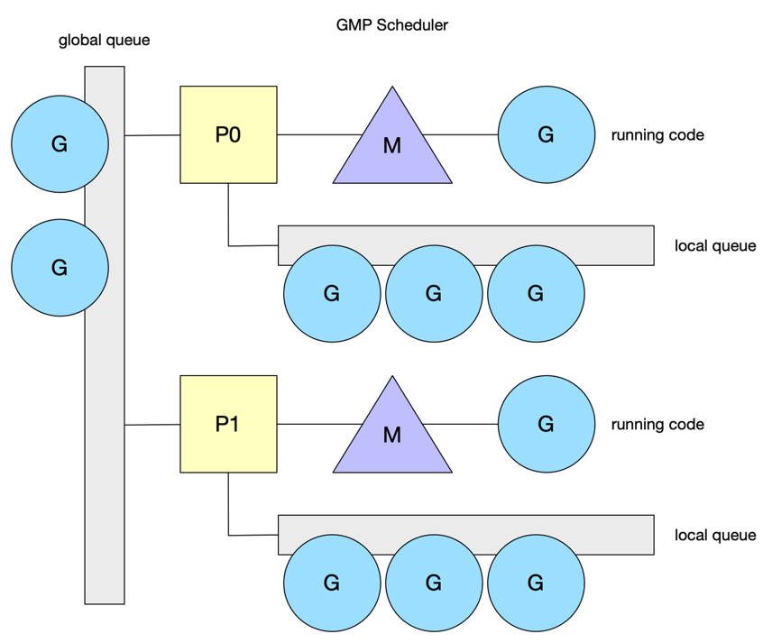
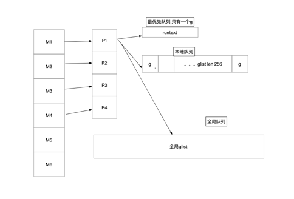

1 linux cfs调度
在讲go调度前,我们大概linux进程调度是怎么做的,不感兴趣可跳到章节2,不影响整体阅读 感兴趣的建议阅读
Linux CFS 调度器：原理、设计与内核实现
内核CFS文档
1.1 csf概述
CFS Completely Fair Scheduler简称，即完全公平调度器
假如我们有一个cpu，有100%的使用权,有两个task在运行,cgroup设定各使用50%,cfs则负责讲cpu时间片分给这两个task(调度线程)
所以cfs就是维护进程时间方面的平衡，给进程分配相当数量的处理器
1.2 cfs大概实现原理
所有需要调度的进程(也可以是线程)都被存放在vruntime红黑树上,值为进程的虚拟运行时间,调度后会根据公式 vruntime = 实际运行时间*1024 / 进程权重来更新值,即插入红黑树最右侧,每次调度都会从最左侧取值
2 go schedule
官方gmp设计文档 下面让我们来看下go schdule中相关的概念,即gmp
- g 用户态线程,代表一个goroutine,go中调度单位,主要包含当前执行的栈信息,以及当前goroutine的状态
- m 内核线程,就是被上文cfs调度的任务
- p 简单理解成队列,存放g需要被调度的资源信息,每个调度g的m都由一个p,阻塞或系统调用时间过长的m除外,会解绑p且创建新的m与该p绑定
- sched
我们先思考几个问题
- 我们有10个待执行的g，4个m如何调度，即g>m
- 我们有两个g,4个m,即g<m，则会存在m空闲
所以我们的调度器得知道所有m的状态,分配好每个m对应的g,
在go 1.0版本的时候,是多线程调度器,g存在一个全局队列,所有的m都是去全局队列拿g,这种情况可以很好的让每个m拿到对应的g，最大问题是拿g的时候锁竞争严重
在go1.11版本引入了word-stealing调度算法,上文文档有介绍该机制,引入了gmp模型,这时候每一个m对应每一个p,又引入了新问题,假如一个g长时间占用m,该m上的其它g得不到调用
在go1.12版本中引入了协作抢占试调用,1.14版本修改成了信号量抢占调用,下文我们专门讲解基于信号量的抢占式调用

大概的调度模型我们了解了,下面我们来看下m的细节,简单理解就是p有任务就拿,没有就去别的p偷，再没有就去全局偷,实在没事干就自旋,如果系统调用达到一定时间后
自身的p就会被拿走找有没有自旋的m,有就给过去,没有就创建新的,下面我们来看看m的代码
2.1 gmp中的主要结构
 m就是操作系统的线程,我们先看下几个重要的字段
// src/runtime/runtime2.go
type m struct {
// 用于执行调度指令的g
g0 *g // goroutine with scheduling stack
//处理signal的g
gsignal *g // signal-handling g
//线程本地存储
tls [tlsSlots]uintptr // thread-local storage (for x86 extern register)
//当前运行的g
curg *g // current running goroutine
// 用于执行 go 代码的处理器p
p puintptr // attached p for executing go code (nil if not executing go code)
//暂存的处理的
nextp puintptr
//执行系统调用之前使用线程的处理器p
oldp puintptr // the p that was attached before executing a syscall
//m没有运行work,正在寻找work即表示自身的自旋和非自旋状态
spinning bool // m is out of work and is actively looking for work
//cgo相关
ncgocall uint64 // number of cgo calls in total
ncgo int32 // number of cgo calls currently in progress
cgoCallersUse atomic.Uint32 // if non-zero, cgoCallers in use temporarily
cgoCallers *cgoCallers // cgo traceback if crashing in cgo call
//将自己与其他的 M 进行串联,即链表
alllink *m // 在 allm 上
}
我们再来看看p的结构m，简单来说,p存在的意义是实现工作窃取（work stealing）算法，就是存放g的给m使用的本地队列, p主要存放了可被调度的goroutine,以及用于m执行的内存分配(不需要加锁)。 上有侵
// src/runtime/runtime2.go
// 其余很多字段都删减了,仅保留关键字段
type p struct {
id int32
//p的状态
status uint32 // one of pidle/prunning/...
//p链表
link puintptr
//链接到m
m muintptr // back-link to associated m (nil if idle)
//go的内存分配相关,后文我们将会详细讲解
mcache *mcache
pcache pageCache
//不同大小的可用的 defer 结构池
deferpool []*_defer // pool of available defer structs (see panic.go)
deferpoolbuf [32]*_defer
//可运行的goroutine队列,无锁访问
// Queue of runnable goroutines. Accessed without lock.
runqhead uint32
runqtail uint32
runq [256]guintptr
//简单来说就是插队的g
// runnext, if non-nil, is a runnable G that was ready'd by
// the current G and should be run next instead of what's in
// runq if there's time remaining in the running G's time
// slice. It will inherit the time left in the current time
// slice. If a set of goroutines is locked in a
// communicate-and-wait pattern, this schedules that set as a
// unit and eliminates the (potentially large) scheduling
// latency that otherwise arises from adding the ready'd
// goroutines to the end of the run queue.
//
// Note that while other P's may atomically CAS this to zero,
// only the owner P can CAS it to a valid G.
runnext guintptr
//可用的g状态链表
// Available G's (status == Gdead)
gFree struct {
gList
n int32
}
//todo 结合后面的发送数据详解
sudogcache []*sudog
sudogbuf [128]*sudog
//go内存分配的span,在内存分配文章详细讲解
// Cache of mspan objects from the heap.
mspancache struct {
// We need an explicit length here because this field is used
// in allocation codepaths where write barriers are not allowed,
// and eliminating the write barrier/keeping it eliminated from
// slice updates is tricky, more so than just managing the length
// ourselves.
len int
buf [128]*mspan
}
//优先被调度
// preempt is set to indicate that this P should be enter the
// scheduler ASAP (regardless of what G is running on it).
preempt bool
}
下面我们再简单看看g的结构
// src/runtime/runtime2.go
type g struct {
//存放栈内存 边界为[lo, hi)
//type stack struct {
// lo uintptr
// hi uintptr
//}
stack stack // offset known to runtime/cgo
stackguard0 uintptr // offset known to liblink
stackguard1 uintptr // offset known to liblink
_panic *_panic // innermost panic - offset known to liblink
_defer *_defer // innermost defer
//当前的m
m *m // current m; offset known to arm liblink
sched gobuf
//被唤醒时传递的参数
param unsafe.Pointer
atomicstatus atomic.Uint32
stackLock uint32 // sigprof/scang lock; TODO: fold in to atomicstatus
goid uint64
schedlink guintptr
//抢占信号
preempt bool // preemption signal, duplicates stackguard0 = stackpreempt
}
g主要就是定义了执行栈,以及调试等,执行的时候讲参数拷贝, 保存执行函数的入口地址
下面我们在来看看sched的结构
sched主要管理p,全局的g队列,defer池,以及m
// src/runtime/runtime2.go
type schedt struct {
lock mutex
//m相关
//自旋的m
midle muintptr // idle m's waiting for work
//自旋的m数
nmidle int32 // number of idle m's waiting for work
nmidlelocked int32 // number of locked m's waiting for work
//已创建的m和下一个mid,及序号表示mid
mnext int64 // number of m's that have been created and next M ID
maxmcount int32 // maximum number of m's allowed (or die)
nmsys int32 // number of system m's not counted for deadlock
nmfreed int64 // cumulative number of freed m's
ngsys atomic.Int32 // number of system goroutines
//空闲p链表
pidle puintptr // idle p's
//空闲p数量
npidle atomic.Int32
//自旋m的数量
nmspinning atomic.Int32 // See "Worker thread parking/unparking" comment in proc.go.
//全局队列
// Global runnable queue.
runq gQueue
runqsize int32
// Global cache of dead G's.
gFree struct {
lock mutex
stack gList // Gs with stacks //有栈的g链表
noStack gList // Gs without stacks //没栈的g链表
n int32
}
//一集缓存,上文中p结构体上有二级缓存
// Central cache of sudog structs.
sudoglock mutex
sudogcache *sudog
// Central pool of available defer structs.
deferlock mutex
deferpool *_defer
// freem is the list of m's waiting to be freed when their
// m.exited is set. Linked through m.freelink.
freem *m
}
在go启动流程中,我们了解到了schedinit,根据上文的gmp结构,我们看下关于调度器的初始化
// src/runtime/proc.go
// The bootstrap sequence is:
//
// call osinit
// call schedinit
// make & queue new G
// call runtime·mstart
//
// The new G calls runtime·main.
func schedinit() {
//m初始化
mcommoninit(gp.m, -1)
//p的初始化
if procresize(procs) != nil {
throw("unknown runnable goroutine during bootstrap")
}
}
m的初始化
// src/runtime/proc.go
func mcommoninit(mp *m, id int64) {
gp := getg()
//不是g0堆栈信息不展示给用户
// g0 stack won't make sense for user (and is not necessary unwindable).
if gp != gp.m.g0 {
callers(1, mp.createstack[:])
}
lock(&sched.lock)
if id >= 0 {
mp.id = id
} else {
//更新m的数量以及id
mp.id = mReserveID()
}
//栈相关
lo := uint32(int64Hash(uint64(mp.id), fastrandseed))
hi := uint32(int64Hash(uint64(cputicks()), ^fastrandseed))
if lo|hi == 0 {
hi = 1
}
// Same behavior as for 1.17.
// TODO: Simplify this.
if goarch.BigEndian {
mp.fastrand = uint64(lo)<<32 | uint64(hi)
} else {
mp.fastrand = uint64(hi)<<32 | uint64(lo)
}
//初始化一个新的m,子线程
mpreinit(mp)
//信号处理相关
if mp.gsignal != nil {
mp.gsignal.stackguard1 = mp.gsignal.stack.lo + stackGuard
}
// 添加到 allm 中，从而当它刚保存到寄存器或本地线程存储时候 GC 不会释放 g.m
// Add to allm so garbage collector doesn't free g->m
// when it is just in a register or thread-local storage.
mp.alllink = allm
// NumCgoCall() iterates over allm w/o schedlock,
// so we need to publish it safely.
atomicstorep(unsafe.Pointer(&allm), unsafe.Pointer(mp))
unlock(&sched.lock)
//cgo相关
// Allocate memory to hold a cgo traceback if the cgo call crashes.
if iscgo || GOOS == "solaris" || GOOS == "illumos" || GOOS == "windows" {
mp.cgoCallers = new(cgoCallers)
}
}
p的初始化
简单的描述下干了哪些事
- 按找nprocs的数量调整allp的大小(runtime.GOMAXPROCS())，并且初始化部分p
- 如果当前p里还有g,没有被移除,讲p状态设置未_Prunning,否则将第一个p给当前的m绑定
- 从allp移除不需要的p,将释放的p队列的任务扔进全局队列
- 最后挨个检查p,将没有任务的p放入idle队列,并将初当前p且没有任务的p连成链表 p的状态分别为_Pidle，_Prunning，_Psyscall，_Pgcstop，_Pdead
- _Pidle 未运行g的p
- _Prunning 已经被m绑定
- _Psyscall 没有运行用户代码,与系统调用的m解绑后的状态
- _Pgcstop P因gc STW 而停止
- _Pdead GOMAXPROCS收缩不需要这个p了,逻辑我们下文有讲
func procresize(nprocs int32) *p {
//获取p的个数
old := gomaxprocs
if old < 0 || nprocs <= 0 {
throw("procresize: invalid arg")
}
if traceEnabled() {
traceGomaxprocs(nprocs)
}
//更新统计信息,记录此次修改gomaxprocs的时间
// update statistics
now := nanotime()
if sched.procresizetime != 0 {
sched.totaltime += int64(old) * (now - sched.procresizetime)
}
sched.procresizetime = now
maskWords := (nprocs + 31) / 32
// 必要时增加 allp
// 这个时候本质上是在检查用户代码是否有调用过 runtime.MAXGOPROCS 调整 p 的数量
// 此处多一步检查是为了避免内部的锁，如果 nprocs 明显小于 allp 的可见数量（因为 len）
// 则不需要进行加锁
// Grow allp if necessary.
if nprocs > int32(len(allp)) {
//与 retake 同步，它可以同时运行，因为它不在 P 上运行
// Synchronize with retake, which could be running
// concurrently since it doesn't run on a P.
lock(&allpLock)
if nprocs <= int32(cap(allp)) {
//nprocs变小,则只保留allp数组里0-nprocs个p
allp = allp[:nprocs]
} else {
//调大创建新的p
nallp := make([]*p, nprocs)
//保证旧p不被丢弃
// Copy everything up to allp's cap so we
// never lose old allocated Ps.
copy(nallp, allp[:cap(allp)])
allp = nallp
}
if maskWords <= int32(cap(idlepMask)) {
idlepMask = idlepMask[:maskWords]
timerpMask = timerpMask[:maskWords]
} else {
nidlepMask := make([]uint32, maskWords)
// No need to copy beyond len, old Ps are irrelevant.
copy(nidlepMask, idlepMask)
idlepMask = nidlepMask
ntimerpMask := make([]uint32, maskWords)
copy(ntimerpMask, timerpMask)
timerpMask = ntimerpMask
}
unlock(&allpLock)
}
//初始化新的p
// initialize new P's
for i := old; i < nprocs; i++ {
pp := allp[i]
if pp == nil {
pp = new(p)
}
//具体初始化流程 我们会在下文讲解
pp.init(i)
atomicstorep(unsafe.Pointer(&allp[i]), unsafe.Pointer(pp))
}
gp := getg()
//如果当前的p的id(第一个p id = 1)大于调整后的p的数量,一般指处理器数量
if gp.m.p != 0 && gp.m.p.ptr().id < nprocs {
// continue to use the current P
gp.m.p.ptr().status = _Prunning
gp.m.p.ptr().mcache.prepareForSweep()
} else {
// release the current P and acquire allp[0].
//
// We must do this before destroying our current P
// because p.destroy itself has write barriers, so we
// need to do that from a valid P.
if gp.m.p != 0 {
if traceEnabled() {
// Pretend that we were descheduled
// and then scheduled again to keep
// the trace sane.
traceGoSched()
traceProcStop(gp.m.p.ptr())
}
gp.m.p.ptr().m = 0
}
//切换到p0执行
gp.m.p = 0
pp := allp[0]
pp.m = 0
pp.status = _Pidle
//将p0绑定到当前m
acquirep(pp)
if traceEnabled() {
traceGoStart()
}
}
//gmp已经被设置,不需要mcache0引导
// g.m.p is now set, so we no longer need mcache0 for bootstrapping.
mcache0 = nil
//释放未使用的p资源
// release resources from unused P's
for i := nprocs; i < old; i++ {
pp := allp[i]
pp.destroy()
// can't free P itself because it can be referenced by an M in syscall
}
// Trim allp.
if int32(len(allp)) != nprocs {
lock(&allpLock)
allp = allp[:nprocs]
idlepMask = idlepMask[:maskWords]
timerpMask = timerpMask[:maskWords]
unlock(&allpLock)
}
var runnablePs *p
for i := nprocs - 1; i >= 0; i-- {
pp := allp[i]
if gp.m.p.ptr() == pp {
continue
}
pp.status = _Pidle
//在本地队列里没有g
if runqempty(pp) {
//放入_Pidle队列里
pidleput(pp, now)
} else {
//p队列里有g,代表有任务,绑定一个m
pp.m.set(mget())
//构建可运行的p链表
pp.link.set(runnablePs)
runnablePs = pp
}
}
stealOrder.reset(uint32(nprocs))
var int32p *int32 = &gomaxprocs // make compiler check that gomaxprocs is an int32
atomic.Store((*uint32)(unsafe.Pointer(int32p)), uint32(nprocs))
if old != nprocs {
//通知限制器p数量改了
// Notify the limiter that the amount of procs has changed.
gcCPULimiter.resetCapacity(now, nprocs)
}
//返回所有包含本地任务的链表
return runnablePs
}
//初始化p,新创建或者之前被销毁的p
// init initializes pp, which may be a freshly allocated p or a
// previously destroyed p, and transitions it to status _Pgcstop.
func (pp *p) init(id int32) {
// p 的 id 就是它在 allp 中的索引
pp.id = id
// 新创建的 p 处于 _Pgcstop 状态
pp.status = _Pgcstop
pp.sudogcache = pp.sudogbuf[:0]
pp.deferpool = pp.deferpoolbuf[:0]
pp.wbBuf.reset()
// 为 P 分配 cache 对象
if pp.mcache == nil {
//id == 0 说明这是引导阶段初始化第一个 p
if id == 0 {
if mcache0 == nil {
throw("missing mcache?")
}
// Use the bootstrap mcache0. Only one P will get
// mcache0: the one with ID 0.
pp.mcache = mcache0
} else {
pp.mcache = allocmcache()
}
}
if raceenabled && pp.raceprocctx == 0 {
if id == 0 {
pp.raceprocctx = raceprocctx0
raceprocctx0 = 0 // bootstrap
} else {
pp.raceprocctx = raceproccreate()
}
}
lockInit(&pp.timersLock, lockRankTimers)
// This P may get timers when it starts running. Set the mask here
// since the P may not go through pidleget (notably P 0 on startup).
timerpMask.set(id)
// Similarly, we may not go through pidleget before this P starts
// running if it is P 0 on startup.
idlepMask.clear(id)
}
g 的初始化
g的状态如下,不需要记住,大概有印象就行了,不清楚的时候可以查到
- _Gidle 表示这个 goroutine 刚刚分配，还没有初始化
- _Grunnable 表示这个 goroutine 在运行队列中。它当前不在执行用户代码。堆栈不被拥有。
- _Grunning 意味着这个 goroutine 可以执行用户代码。堆栈由这个 goroutine 拥有。它不在运行队列中。它被分配了一个 M 和一个 P（g.m 和 g.m.p 是有效的）
- _Gsyscall 表示这个 goroutine 正在执行一个系统调用。它不执行用户代码。堆栈由这个 goroutine 拥有。它不在运行队列中。它被分配了一个 m
- _Gwaiting 表示这个 goroutine 在运行时被阻塞
- _Gmoribund_unused 暂未使用
- _Gdead 这个 goroutine当前未被使用。它可能刚刚退出，处于空闲列表中，或者刚刚被初始化。它不执行用户代码。它可能有也可能没有分配堆栈。 G 及其堆栈（如果有）由退出G或从空闲列表中获得G的M所有。
- _Genqueue_unused 暂未使用
- _Gcopystack 意味着这个 goroutine 的堆栈正在被移动
- _Gpreempted 意味着这个 goroutine 停止了自己以进行 suspendG 抢占
//gc相关的g状态,放到后面章节讲解
_Gscan = 0x1000
_Gscanrunnable = _Gscan + _Grunnable // 0x1001
_Gscanrunning = _Gscan + _Grunning // 0x1002
_Gscansyscall = _Gscan + _Gsyscall // 0x1003
_Gscanwaiting = _Gscan + _Gwaiting // 0x1004
_Gscanpreempted = _Gscan + _Gpreempted // 0x1009
启动go的方法为runtime.newproc,整体流程如下
- 调用runtime.newproc1
- 通过gfget从p.gFree上获取一个g,如果p.gFree为空,则通过sched.gFree.stack.pop()从全局队列捞一批,当p.gFree=32||sched.gFree=nil中止
- 如果没有获取到,通过malg与allgadd分配一个新的g简称newg,然后把newg放入p的runnext上
- 若runnext为空,则直接分配,若runnext不为空,则把runnext上存在的旧的g简称oldg放入p.runq即p的本地队列末尾,若runq满了
- 调用runqputslow将p.runq上的g分配一半到全局队列,同时将oldg添加到末尾
+---------------------+
| go func |
+---------------------+
|
|
v
+---------------------+
| runtime.newproc1 |
+---------------------+
|
|
v
+---------------------+
| malg && allgadd |
+---------------------+
|
|
v
+--------------+ +-------------------------------+
| wakep | <---------- | runqput |
+--------------+ +-------------------------------+
| ^ ^
| | |
v | |
+--------------+ runnext空 +---------------------+ | |
| pp.runq=newg | <---------- | runnext | | |
+--------------+ +---------------------+ | |
| | | |
| | runnext非空 | |
| v | |
| +---------------------+ | |
| | pp.runnext=newg | | |
| +---------------------+ | |
| | | |
| | | |
| v | |
| +---------------------+ | |
| | put oldg to pp.runq | | |
| +---------------------+ | |
| | | |
| | pp.runq full | |
| v | |
| +---------------------+ | |
| | runqputslow | -+ |
| +---------------------+ |
| |
+--------------------------------------------------------+
// src/runtime/proc.go
// Create a new g running fn.
// Put it on the queue of g's waiting to run.
// The compiler turns a go statement into a call to this.
func newproc(fn *funcval) {
//很熟悉的方法了,获取一个g
gp := getg()
//获取pc/ip寄存器的值
pc := getcallerpc()
systemstack(func() {
//创建一个新的 g,状态为_Grunnable
newg := newproc1(fn, gp, pc)
//pp即我们上文中的p,该m上绑定的p
pp := getg().m.p.ptr()
//runqput 尝试将 g 放入本地可运行队列。如果 next 为假，runqput 将
//g 添加到可运行队列的尾部。如果 next 为真，则 runqput 将 g 放入 pp.runnext 槽中
//如果运行队列已满，则 runnext 将 g 放入全局队列。仅由所有者 P 执行。
//我们回忆下,pp.runnext是插队的g,将在下一个调用
runqput(pp, newg, true)
//todo 暂时理解不够深刻,后续二刷
//如果主m已经启动,尝试再添加一个 P 来执行 G
if mainStarted {
wakep()
}
})
}
下面我们再来看下newproc1()，即创建一个新的g
// Create a new g in state _Grunnable, starting at fn. callerpc is the
// address of the go statement that created this. The caller is responsible
// for adding the new g to the scheduler.
func newproc1(fn *funcval, callergp *g, callerpc uintptr) *g {
if fn == nil {
fatal("go of nil func value")
}
mp := acquirem() // disable preemption because we hold M and P in local vars.
//获取当前m上绑定的p
pp := mp.p.ptr()
//根据p获取一个g,从g上的gFree取,如果没有,从全局捞一批回来(从sched.gFree里取,直到sched.gFree没有或者pp.gFree里>=32为止)
newg := gfget(pp)
//如果没取到g(初始化是没有g的)
if newg == nil {
// stackMin = 2048
//创建2k的栈
newg = malg(stackMin)
//将新创建的g从_Gidle更新为_Gdead
casgstatus(newg, _Gidle, _Gdead)
//将_Gdead的栈添加到allg,gc不会扫描未初始化的栈
allgadd(newg) // publishes with a g->status of Gdead so GC scanner doesn't look at uninitialized stack.
}
//省略了部分各种赋值堆栈指针给调度sched,以及g
//由_Gidle变成了_Gdead变成了_Grunnable
//分配好寄存器啥的,将g从_Gdead变成_Grunnable
casgstatus(newg, _Gdead, _Grunnable)
//分配go id
newg.goid = pp.goidcache
//用于下一次go分配
pp.goidcache++
if raceenabled {
//分配data race的ctx
newg.racectx = racegostart(callerpc)
if newg.labels != nil {
// See note in proflabel.go on labelSync's role in synchronizing
// with the reads in the signal handler.
racereleasemergeg(newg, unsafe.Pointer(&labelSync))
}
}
if traceEnabled() {
traceGoCreate(newg, newg.startpc)
}
//恢复抢占请求
releasem(mp)
return newg
}
func runqput(pp *p, gp *g, next bool) {
//true
if next {
//将newg分配到runnext,直到成功为止
retryNext:
oldnext := pp.runnext
if !pp.runnext.cas(oldnext, guintptr(unsafe.Pointer(gp))) {
goto retryNext
}
if oldnext == 0 {
return
}
// Kick the old runnext out to the regular run queue.
gp = oldnext.ptr()
}
retry:
h := atomic.LoadAcq(&pp.runqhead) // load-acquire, synchronize with consumers
t := pp.runqtail
//如果本地队列没满的情况,将oldg分配到p的本地队列
if t-h < uint32(len(pp.runq)) {
pp.runq[t%uint32(len(pp.runq))].set(gp)
atomic.StoreRel(&pp.runqtail, t+1) // store-release, makes the item available for consumption
return
}
//本地p上的glist满了,将oldg放入全局glist
if runqputslow(pp, gp, h, t) {
return
}
// the queue is not full, now the put above must succeed
goto retry
}
// Put g and a batch of work from local runnable queue on global queue.
// Executed only by the owner P.
//将p上的glist一次取1/2放入全局glist,同时将gp插入末尾
func runqputslow(pp *p, gp *g, h, t uint32) bool {
var batch [len(pp.runq)/2 + 1]*g
// First, grab a batch from local queue.
n := t - h
n = n / 2
if n != uint32(len(pp.runq)/2) {
throw("runqputslow: queue is not full")
}
for i := uint32(0); i < n; i++ {
batch[i] = pp.runq[(h+i)%uint32(len(pp.runq))].ptr()
}
if !atomic.CasRel(&pp.runqhead, h, h+n) { // cas-release, commits consume
return false
}
batch[n] = gp
if randomizeScheduler {
for i := uint32(1); i <= n; i++ {
j := fastrandn(i + 1)
batch[i], batch[j] = batch[j], batch[i]
}
}
// Link the goroutines.
for i := uint32(0); i < n; i++ {
batch[i].schedlink.set(batch[i+1])
}
var q gQueue
q.head.set(batch[0])
q.tail.set(batch[n])
// Now put the batch on global queue.
lock(&sched.lock)
globrunqputbatch(&q, int32(n+1))
unlock(&sched.lock)
return true
}
我们来总结下创建g的过程
- 尝试从本地p获取已经执行过的g,本地p为0则一次从全局队列捞32个,再返回p
- 如果拿不到g(初始化没有),则创建一个g,并分配线程执行栈,g处于_Gidle状态
- 创建完成后,g变成了 _Gdead，然后执行函数的入口地址跟参数, 初始化sp,等等存储一份，调用后并存储sched并将状态变为_Grunnable
- 给新创建的goroutine分配id,并将g塞入本地队列或者插入p.runnext(插队)，满了则放入p.runq末尾,p.runq也满了则同时将p的runq通过runqputslow函数
- 分一半放入全局队列